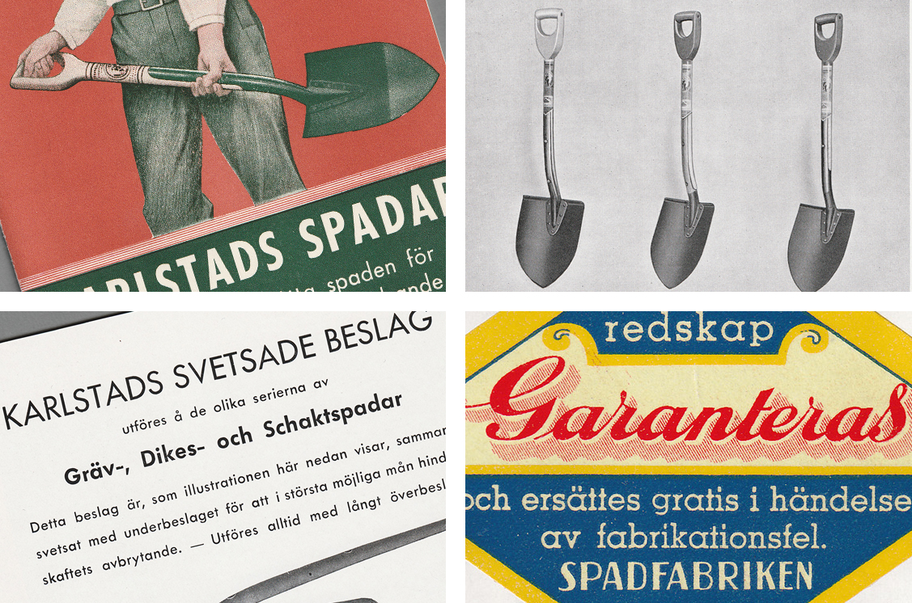

Materialet består av en reklamtrycksak från Spadfabriken Karlstad, daterad 1943. Den fysiska katalogen ägs av Karlstads hembygdsförening.
Den här hemsidan presenterar en digitaliserad version av en produktkatalog från Spadfabriken Karlstad och en transkription av katalogens textinnehåll samt information om fabrikens historia. Katalogen ger en inblick i dåtidens marknadsföring och estetiska uttryck. Tack vare en prislista digitaliserad av Karlstads hembygdsförening kan vi även här ge exempel på 1940-talets prissättning på handverktyg.
Upphovsrätten till katalogen och dess innehåll innehas av Karlstad Redskap AB. Materialet har digitaliserats och publicerats med tillstånd från upphovsrättsinnehavaren.